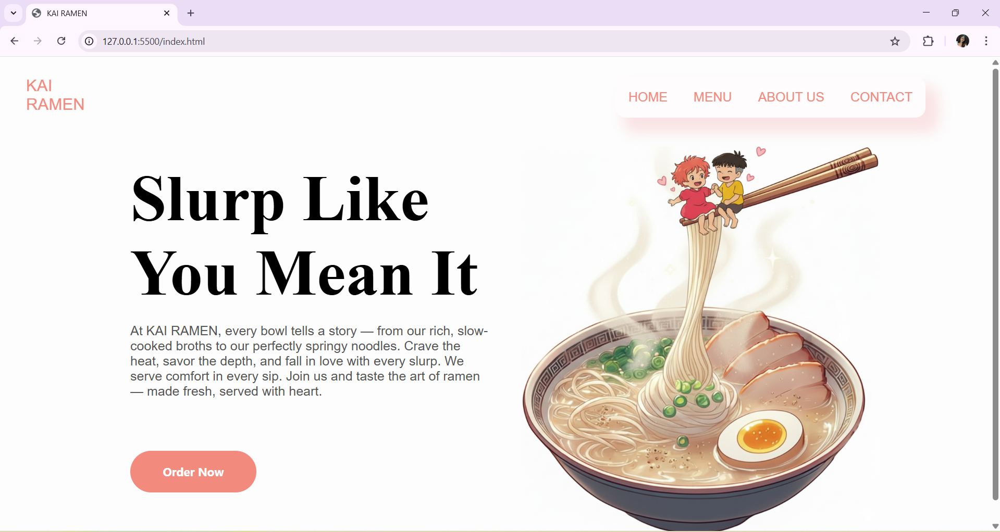

Description:
KAI RAMEN is a modern and visually appealing restaurant landing page designed and developed using HTML and CSS. The website showcases a clean layout, soft color palette, and creative food-themed visuals to create a warm and inviting user experience. The homepage features a stylish navigation bar, engaging typography, descriptive content, and a call-to-action button that encourages users to explore the restaurant.
Tools / Technologies Used:
HTML
CSS
Gemini (for image)